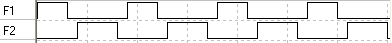
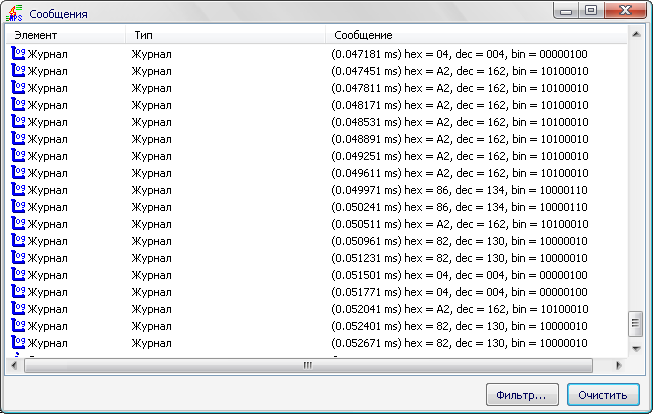

Этот генератор служит для получения двух неперекрывающихся последовательностей импульсов. Можно настроить следующие параметры: длину импульса F1, паузу между F1 и F2 (неактивные уровни на F1, F2), длину импульса F2, паузу между F2 и F1. Также можно задать множитель, на который будут умножены все эти длительности.
По умолчанию устанавливается следующая последовательность: 3-1-4-1, что подходит для использования с процессором Intel 8080. В этом случае временные диаграммы выглядят так:
Этот генератор постоянно генерирует заданную последовательность импульсов. Длину каждого импульса и каждой паузы можно задать отдельно в окне свойств. На выход F1 подается генерируемая последовательность. На выход ST – короткий импульс, говорящий о начале очередной последовательности. Например, в нашем случае получается следующее:
Это аналог предыдущего. Отличие в том, что ST является входом. По фронту на нем запускается генерация последовательности. Когда последовательность закончилась, генератор ожидает следующего фронта ST.
Генерирует одиночный импульс заданной длины с заданной задержкой до него. Эти задержки настраиваются в окне свойств элемента. Фронт на ST запускает генерацию – сначала генератор выжидает заданное время задержки, затем выводит один импульс заданной длины. Временная диаграмма может выглядеть так:
Предназначены для вывода на свои выводы высокого или низкого уровня в зависимости от того, нажата ли соответствующая кнопка. Есть варианты с одной, четырьмя, восемью и шестнадцатью кнопками.
В отличие от более простого логического анализатора из плагина Инструменты, этот элемент умеет намного больше. Он так же позволяет захватывать и отображать 8 каналов, но при этом есть возможность его запуска по сигналу на входе EN и полного сброса по сигналу RES. Активным уровнем на последнем является H, т.е. при высоком уровне логический анализатор будет сброшен.
В окне свойств можно выполнить следующее:
При повторном запуске логический анализатор не сбрасывается, и предыдущие записанные временные диаграммы не исчезают. При выводе на экран они отделяются от текущих толстой вертикальной линией.
В отличие от предыдущего варианта логического анализатора, этот не так требователен к памяти.
Этот элемент иногда может использоваться как замена логическому анализатору. При фронте на ST байт снимается с контактов D7-D0 и добавляется в список, который можно посмотреть в окне, вызываемом нажатием правой кнопки мыши на УГО.
Эти же данные выводятся в окне сообщений программы, если разрешить отображение сообщений из категории "Журнал":
